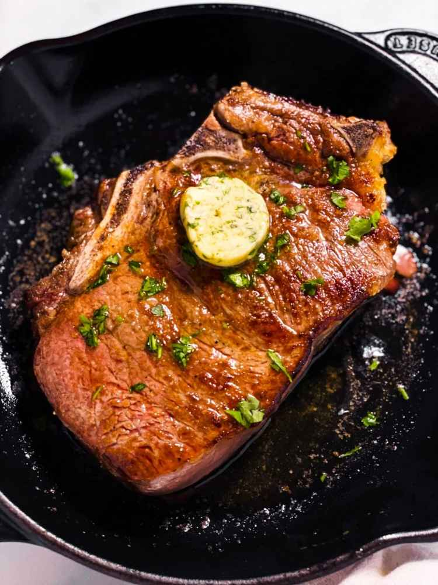

Oven Baked Steak
This Oven Baked Steak recipe is so easy to pull off, and results in perfectly cooked steak! You only need a handful of simple ingredients to cook this, plus plenty of garlic butter to serve.

Ingredients
- Salt/Pepper
- Butter
- Oil
- Steak
How To Cook
- Remove the steak from the fridge 30 minutes before cooking. Season it with salt and pepper and place it on a plate at room temperature.
- Once ready, heat the oven to 400°F. Position the rack in the middle of the oven. Place a cast iron skillet (large enough to comfortably hold your steak or steaks) over medium-high to high heat on the stove and heat it until very hot, 3-5 minutes.
- Add the oil, then sear the steak 60-90 seconds on the first side, gently touching the steak down with clean fingertips a few times to ensure the entire surface has contact with the skillet (don’t smush or squash the steak, just gently hold it down). Flip, sear the second side for 30-45 seconds (it will have contact with the skillet the entire time in the oven, so I leave it less long), then pull the skillet from the stove.
- Place the butter on the steak, then place the skillet in the oven. Bake for 4-8 minutes, depending on your preferred doneness. Once done, remove it from the oven, place the steak on a plate and tent with foil. Rest for 5-10 minutes, then serve!
Enjoy!